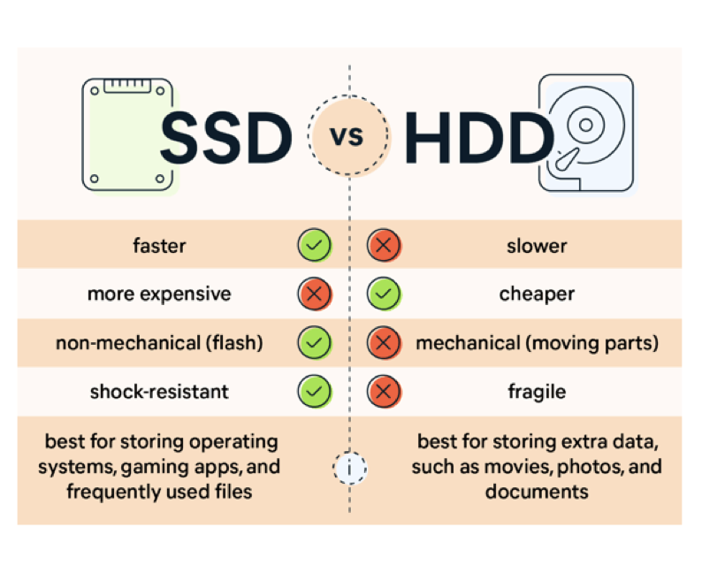

Scenario 1: Domain Name System (DNS) Server Denial of Service (DoS)
On a Saturday afternoon, external users start having problems accessing the organization’s public websites. Over the next hour, the problem worsens to the point where nearly every access attempt fails.
Meanwhile, a member of the organization’s networking staff responds to alerts from an Internet border router and determines that the organization’s Internet bandwidth is being consumed by an unusually large volume of User Datagram Protocol (UDP) packets to and from both the organization’s public DNS servers.
Analysis of the traffic shows that the DNS servers are receiving high volumes of requests from a single external IP address. Also, all the DNS requests from that address come from the same source port.
Questions(1)
Preparation
- Would the organization consider this event as an incident? If so, why?
Incident
- What measures should be in place to attempt preventing this type of incident from occurring or to limit its impact?
Network Monitoring and Filtering: Use tools like firewall, monitor and filter network traffic, block abnormal traffic
Traffic Limitation and Filtering: Control and filter traffic from different IP addresses
Content Delivery Network (CDN): Can help distribute traffic, reduce server load
Load Balancing: Distribute traffic to multiple servers, avoiding single points of failure and overload
Detection and Analysis
- What precursors of the incidents, if any, might the organization detect? Could we do something about it?
Precursors: An increase in unusual or unexpected traffic patterns to the organization’s public DNS servers.
Detect: Monitoring network traffic and identifying any spikes in UDP traffic to the DNS servers.
- What indicator of the incident might the organization detect?
A sudden increase in UDP traffic to the public DNS servers, from a single external IP and with requests all coming from the same source port.
- What tools might be needed to detect this particular incidents?
Wireshark, Tcpdump
- How would the incident response team analyze and validate this incident?
Examining the network traffic logs and DNS server logs to validate the attack.
Look for patterns such as the high volume of UDP packets from a single IP address and the same source port, confirming that it matches the characteristics of a DNS amplification attack.
- Who should be involved?
The incident response team, including network administrators, security analysts, and possibly external DDoS mitigation service providers or ISPs, should be involved in responding to this incident.
- How would you prioritize this incident?
It should be prioritized as critical, as it is impacting the organization’s public-facing services and potentially causing widespread disruption for external users.
Questions (2)
Containment, Eradication, and Recovery
- What strategy should the organization take to contain the incident? Why that would be better than others?
Isolate the affected DNS servers from the network to prevent further impact on other systems.
This strategy is effective because it minimizes the impact of the attack on the organization’s infrastructure while allowing legitimate traffic to continue flowing.
- What could happen if this is not contained?
Websites and services will likely remain inaccessible to external users. This could lead to reputational damage, financial losses, and potential legal issues.
- What additional tools might be needed to respond to this incident?
Intrusion Detection Systems (IDS) or Intrusion Prevention Systems (IPS) could also be used to detect and block malicious traffic patterns.
- Who should be involved in this phase of the incident?
The incident response team, including network administrators, security analysts, and DDoS mitigation specialists, should be involved in this phase.
- What source of evidence, if any, should be acquired.
Network traffic logs, DNS server logs, and any other relevant logs or data.
Post-Incident activity
- Who would attend the lessons learnt meeting about this incidents?
The lessons learned meeting should be attended by members of the incident response team, network administrators, security analysts, senior management, and any other relevant stakeholders.
- What could be done to prevent similar incidents from occurring in the future?
- Regular security audits and vulnerability assessments
- Implement access control and authentication
- Updating or patching systems and softwares
- Educating employees about security best practices
- What could be done to improve and accelerate detection of similar incidents?
- Real time monitoring
- Regular security audits and penetration testing
Additional questions
- Whom should the organization contact regarding the external IP address in question?
The Internet Service Provider (ISP) responsible for the external IP address
- Suppose that after the initial containment measures were put in place, the network administrators detected that nine internal hosts were also attempting the same unusual requests to the DNS server. How would that affect the handling of this incident?
There maybe a potential compromise of those hosts. This could be due to malware or other malicious activity.
Isolate them from the network, and conduct a thorough analysis
- Suppose that two of the nine internal hosts disconnected from the network before their system owners were identified. How would the system owners be identified?
- Check network logs and other monitoring tools to gather information about the hosts.
- Contact the IT department or system administrators to determine the owners of the hosts based on IP addresses or other identifying information.
- If necessary, conduct interviews with employees to gather more information about the hosts and their owners.
Key Concepts in Information Security
Confidentiality, Intergrity, Availability
Cyber Attack Techniques
Obfuscation
Stealthiness (Files are encrypted and camouflaged to blend with other legitimate system files)
Wipe Out Techniques (Erase all traces of their own activity)
Hijacking (Hijack legitimate software in order to manipulate its logic)
Watering Holes (‘bait’ a legitimate web site first, then wait for the victim to visit that web site)
Exploits (Once they find a hole, they penetrate the system, compromising its nodes)
False Flags (Mislead research into the true identity of the attackers)
Anonymity (In order to hide their tracks, the attackers set up a number of proxies between themselves and the end target)
Common Types of Cyber Attacks
Malware
Phishing
Social engineering
Dumpster diving
Man in the middle and free connectivity
Cyber Threats In Focus - Singapore
- AdvancedPersistent Threats
- Scam
- Phishing
- Malware
Types of CSIRT
internal, external, coordinating, hybird
Incident Response Lifecycle
Preparation: Before incident
Detection & Analysis: Routine operation & potential incident
Containment, Eradication & Recovery: During confirmed incident
Post-incident Activity: After incident has been concluded
Maersk Cyber Attack
Why was the Maersk attack so effective?
Reward for cost cutting
Rapid digitisation
Flat networks
Access Management
Why was the Maersk recovery so hard?
Lack of internal challenge
Lack of crisis planning
Poor asset management
No burst capacity
Containment, Eradication and Recovery
What would happen if we moved on to Recovery or Post-Incident Activity phase without full Eradication?
- Residual Malware
- Continued Compromise
- Incomplete Recovery
Containment
Limiting the extent of the incident and preventing it from spreading or causing further damage to the organization.
Containment Strategy Considerations
Potential damage to and theft of resources
Need for evidence preservation
Service availability
Time and resources needed to implement the strategy
Effectiveness of the strategy
Duration of the solution
Honeypot
A honeypot in cybersecurity is a decoy system or network set up to attract cyber attackers.
To detect, deflect, or study hacking attempts to gain unauthorized access to information systems. Honeypots can also help in understanding the attacker’s tactics, techniques, and procedures.
Evidence Gathering
Use pre-defined templates to collect data
Keep Incident Response/Management system isolated from affected network and systems
Reconcile the evidences and notes with other incident responders
Identify missteps early and gather other supporting evidences
Identify attacking hosts
Eradication
The process of removing the threat from the organization’s environment.
This includes identifying and eliminating the root cause of the incident.
Undoing Threat actors’ actions
Restoring to known good state (baseline)
Removing Threat actors’ presence & backdoors
Performing security testing
Dealing with unauthorised transactions
Revoking and renewing access credentials
Recovery
The process of restoring and returning affected systems and devices back to their fully operational states.
Post-Incident Activity
Often most under-rated activity in the lifecycle
Identify Lesson learnt
Data collected during incidents (Cont.)
Number of incident handled in a year
Time dimension per incidents
Subjective assessment of each incident
Evidence Retention
General and specific data retention policy
Safekeeping
Cost
Incident Response Coordinate
Coordinating Team, Incident Response Team, Other Incident Response Team
Coordination Analysis
Team to Team
exist during any phase of the incident handling lifecycle
Team to Coordinating team
exist between an organizational incident response team and a separate organization that acts a central point (ISAC or supervisory/regulatory body)
Coordinating Team to Coordinating team
exist to share information relating to cross-cutting incidents which may affect multiple communities (US-CERT and the ISACs )
Essential Concepts
Computer Forensics
In its strictest connotation, the application of computer science and investigative procedures
Involving the examination of digital evidence, following proper search authority, chain of custody, validation with mathematics, use of validated tools, repeatability, reporting, and possibly expert testimony (NIST)
Evidence, Analysis, Acquisition, Reporting
Digital Evidence
Any data that is preserved in a computer system that can be read or understand by a person or computer system/applications.
What Where When Who Why How
Metadata
Data Volatility
Preserve data from most volatile first
Decide trade-off between volatile vs NonVolatile data
Speed is the essence
Manual collection is slow
Automatic collection collects more data and more consistent
File System
NTFS, FAT32, exFAT, EXT2/3/4
Disk Drive and SSD
Windows Forensics
File Locations
- Where do core Windows services exist; such as svchost.exe, wininit.exe, lsass.exe??
C:\Windows\System32
- How many files/folders exist in this folder??
Thousands!
Write-Host (Get-ChildItem | Measure-Object).count Write-Host (Get-ChildItem *.exe | Measure-Object).count Get-ChildItem *.exe | Out-File C:\temp\sample.txt
Auto Start
AutoStart Extension Points (ASEP)
HKEY_CURRENT_USER\Software\Microsoft\Windows NT\CurrentVersion\Windows HKEY_CURRENT_USER\Software\Microsoft\Windows\CurrentVersion\RunServices HKEY_CURRENT_USER\Software\Microsoft\Windows\CurrentVersion\RunServicesOnce HKEY_CURRENT_USER\Software\Microsoft\Windows\CurrentVersion\Explorer\Shell Folders HKEY_LOCAL_MACHINE\Software\Microsoft\Windows\CurrentVersion\RunServices HKEY_LOCAL_MACHINE\Software\Microsoft\Windows\CurrentVersion\RunServicesOnce HKEY_LOCAL_MACHINE\SOFTWARE\Microsoft\Windows\CurrentVersion\Explorer\Shell Folders C:\ProgramData\Microsoft\Windows\Start Menu\Programs\StartUp C:\Users%Username%\AppData\Roaming\Microsoft\Windows\Start Menu\Programs\Startup
Hidden Files
+h attribute on files/folders
Less sophisticated malware
Other users attempting to hide things
- PS > Get-ChildItem –Attributes hidden
- PS > Get-ChildItem –Recurse –Attributes hidden
- CMD C:\ dir /A:h dir /s /A:h
Alternate Data Streams
Feature of NTFS intended for Windows / Mac compatibility
Most common use is tagging downloaded files
Malware likes to hide files within ADS
Prefetch
Windows Prefetch Location: C:\Windows\Prefetch
Maintains a list of used programs
Used to decrease the amount of time to open a program
One of several methods to identify evidence of execution
Proprietary format == No built-in tool to parse data
Sigcheck
Part of the Sysinternals Suite of tools
Checks digital signature of executables against Microsoft certificates
Helps identify files trying to hide inside the Windows $PATH
Useful command line switches
-e scans for executables regardless of listed extension
-c generates csv output
-u only display unknown files
-v Performs a lookup in VirusTotal for the associated hash of suspect file
-vt Used with above switch to agree to VirusTotal terms of service
Timeline analysis
Gathers data from multiple sources and places them in chronological order
Extremely powerful skillset which can clearly identify what happened
EVERYTHING IS COLLECTED! End Users, Remote Users, System Processes, etc.
Understanding of NTFS timestamps is crucial
M – last Modified ß content of the file
A – last Accessed
C – metadata Changes ß updates to the content of the MFT record
B – when the file was Born/created
Windows Registry Analysis
The following Registry files are accessible via a forensic image:
C:\WINDOWS|System32\config\SAM
C:\WINDOWS\System32\config\SECURITY
C:\WINDOWS|System32\config\SOFTWARE
C:\WINDOWS|System32\config\SYSTEM
C:Documents and Settings<user_profile>|ntuser.dat. (There is a ntuser.dat file for every user profile.)
Windows 7 introduced USRCLASS.DAT (Contains the muicache & shellbags)
User assist file, MUICache, MRU (Most Recently Used)
Memory Forensics
A branch of digital forensics focusing on the analysis and examination of volatile data in a computer’s memory (RAM).
Targets the information stored in a computer’s RAM, which is lost when the computer is powered off or rebooted.
NorthBridge
The Northbridge typically handles communications among the CPU, in some cases RAM, and PCI Express video cards, and the southbridge.
SouthBridge
The Southbridge can usually be distinguished from the northbridge by not being directly connected to the CPU.
More on RAM
RAM can be thought of as an array of bytes
The data structure of RAM is designed to be volatile, meaning it requires power to maintain the stored information. Once the power is turned off, the data in RAM is lost.
DRAM (Dynamic RAM)
The most common type of RAM. It needs to be dynamically refreshed to maintain the data. (slow, inexpensive)
SRAM (Static RAM)
Does not need to refresh. (fast, expensive)
VRAM (Video RAM)
Designed for graphics processing
NVRAM (Non-Volatile RAM)
A type of memory that retains data without continuous power supply, useful for storing configuration settings and certain types of cache
SDRAM (Synchronous DRAM)
An improvement over conventional DRAM (faster)
Why Memory Forensics?
Computer Forensics focuses on
- Data Recovery
- File Analysis
- Timeline Analysis
- Artifact Analysis
Memory Forensics focuses on
- Process Analysis
- Malware Detection
- Rootkit Detection
- System State Analysis
Challenges
Structure
Unlike FileSystem, and does not have any index
Volatility
When an application changes behavior, its data in memory will change instantly